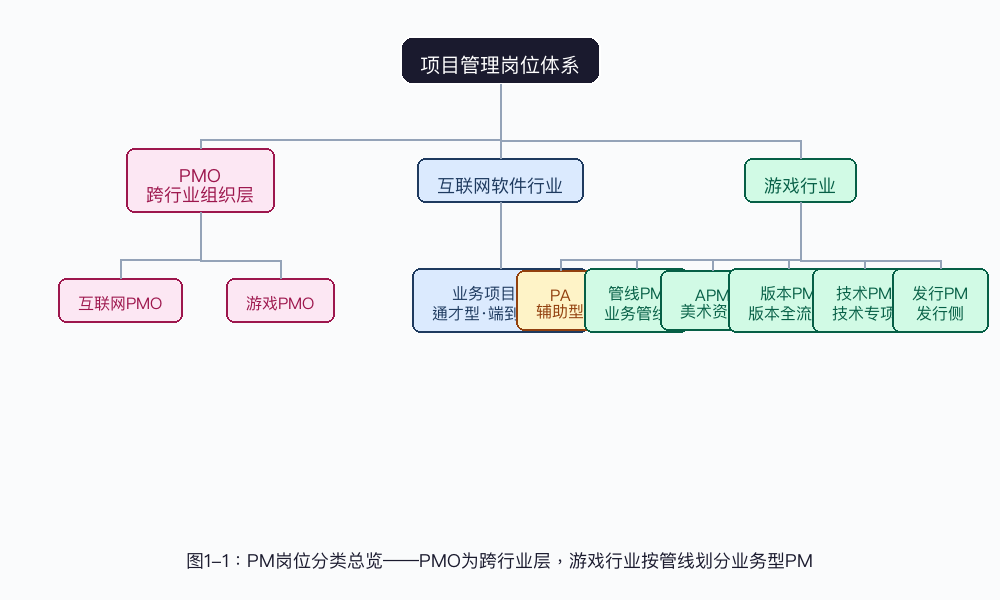
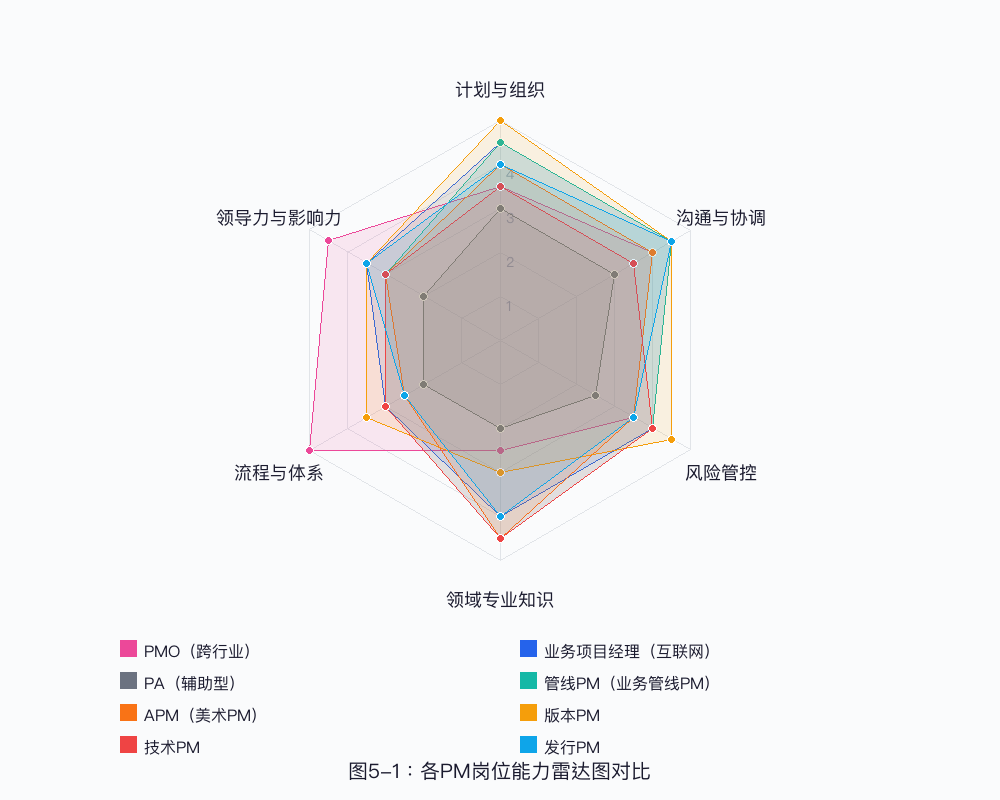
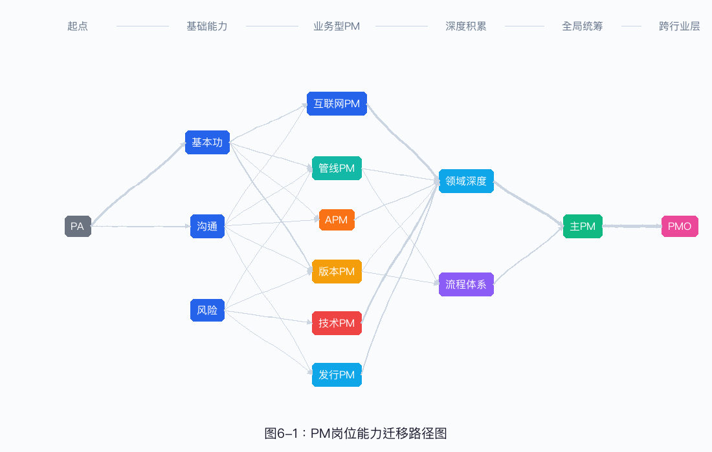
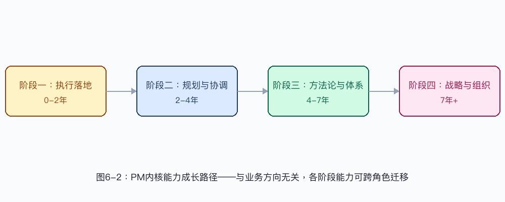

系统梳理PM职能边界、能力模型与共性通用性，助力职业发展与团队建设
互联网和游戏行业的PM岗位，这些年分得越来越细。行业不同、场景不同，PM该干什么、得会什么、产出什么，差别其实挺大。先把这些差异理清楚，后面的体系搭建和职业规划才不会跑偏。
按实际工作情况来分，PM大概可以分成三类：辅助型、业务型、跨行业型。
业务项目经理（通才型）——一个PM从头到尾跟完一个产品或业务的需求到上线，人不多，角色也比较精简。
游戏研发是按管线（Pipeline）组织的，系统管线、关卡管线、大世界管线、动作管线……每条管线都得有一个PM从头到尾盯着。
游戏研发按管线组织，每条管线配一个PM。下面这些角色没有高低之分，只是分工方向不一样，每个方向都能做深：
| 角色类型 | 角色 | 定位 | 说明 |
|---|---|---|---|
| 辅助型 | PA | 项目助理 | 协助主PM执行日常落地、文档整理与进度跟进 |
| 业务型 | 管线PM | 业务管线管理 | 负责具体业务管线（系统管线、关卡管线、大世界管线、动作管线、美术场景管线等）的端到端管理 |
| 业务型 | APM（美术PM） | 美术资源管理 | 统管美术团队的排期、交付与外包管理 |
| 业务型 | 版本PM | 版本全流程管理 | 负责版本规划、打包、测试与发布全流程 |
| 业务型 | 技术PM | 技术专项管理 | 负责技术专项与技术风险的管控 |
| 业务型 | 发行PM | 发行侧管理 | 负责游戏发行环节的进度管理与跨团队协作 |

| 对比维度 | 互联网软件行业 | 游戏行业 |
|---|---|---|
| 组织架构模式 | 项目型/产品型组织，围绕"产品功能"组建feature team | 事业部→工作室→项目组多层架构，围绕"管线"组建 |
| PM角色定位 | 通才型，一个PM覆盖产品全生命周期 | 专才型，多个PM沿管线分工，各管一条管线 |
| 研发链路 | 需求→开发→测试→发布（链路短，角色少） | 策划→美术→程序→QA→打包→发布（链路长，角色多，涉及外包） |
| 业务角色 | 产品+开发+测试（3-4个角色） | 策划+美术+程序+测试+运营+市场+外包（7+个角色） |
| 发布模式 | Web端以持续部署为主，客户端产品（App等）同样需要版本火车节奏 | 客户端产品，固定版本火车节奏（双周-月级） |
| PM数量/项目 | 通常1个PM | 3-5个PM（管线PM+版本PM+APM+技术PM等） |
互联网和游戏PM的差异，说到底就是两条：研发链路有多长，协作角色有多杂。Web产品链路短、人少，一个通才PM就能盯下来；游戏研发链路长、人多还带外包，只能多个专才PM各管一条管线。不过一旦涉及到客户端发版，两边在版本管理上的需求其实差不多。
PMO（项目管理办公室）不看行业，只看公司规模和复杂度。[1]
腾讯游戏PMO实践印证腾讯IEG光子工作室群美术中心有个项目管理组，高级项目经理当组长，干的其实就是PMO的活。在腾讯，正式叫PMO的部门不多，但只要一个平台支持部门或中台有两个以上的PM，这个小组实质上就是在做PMO的事。[2]
看看现在流程哪里卡、哪里浪费，设计更顺的协作机制，把验证过的好做法沉淀成SOP。
多个项目抢资源的时候怎么分，跨项目怎么配合，怎么把公司战略拆成一堆可执行的项目。
定交付效率和质量指标，跑绩效考核，收集数据、评估结果。
带PM做项目规划，教他们识别风险和带团队，推广好用的工具链。
跟项目组PM比起来，PMO有几个明显特征[2]：
打个比方：项目组PM是盯一栋楼怎么盖，PMO是盯整个建筑集团的水泥怎么调度。[2]
业务项目经理是互联网行业最常见的PM角色，直接背业务目标，在业务、产品、技术、测试之间穿针引线。通才型，一个需求从诞生到上线，全程跟到底。
典型做法：月度排期。月初收集需求，排优先级、估工时，留15%-20%的缓冲应对变更，月末复盘偏差。
典型做法：风险预警分级。阻塞按影响和紧急程度分三级，一级（卡主流程）立刻升级，二级（影响局部）24小时内协调，三级（可缓）放周报里跟踪。
典型做法：需求收集标准。需求必须包含背景目标、功能描述、验收条件、优先级、预计工期，缺一个就退回补，别让模糊需求进排期。
典型做法：评审会三步法。会前发材料并标清楚哪里要做决策，会中聚焦决策别发散，会后24小时内出纪要跟待办。
游戏研发比互联网软件复杂得多。一个功能从策划案到上线，得走策划→美术→程序→QA→打包→发布这么一大圈。所以游戏行业按管线（Pipeline）分了多个PM角色：PA（辅助型）+ 管线PM/APM/版本PM/技术PM/发行PM（业务型）。所有业务型PM本质上都是管线管理者，各管一条管线，从头到尾负责交付。跟软件行业的业务PM类似，只是分工更细。
PA是辅助型角色，帮主PM做日常管理和落地执行。PA不独立负责管线，主要做执行层面的支持。
核心职责帮项目经理和制作人做大型研发项目的日常管理、协调、落地和打包；帮版本负责人盯功能进度和风险；写文档、整理资料、维护知识库。
管线PM围绕具体业务管线做端到端管理。不同项目管线划分不同，系统管线（角色、战斗、经济系统这些）、关卡管线、大世界管线、动作管线、美术场景管线……每条管线配一个PM，从需求跟到交付。[5][6]
核心职责管一条管线从策划、美术、程序、QA到外包的全流程；参与需求规划和外包计划；把管线协作机制理清楚，持续优化；扎进业务细节里，发现问题就主动协调解决。
典型做法：管线看板管理。把每个关卡/功能在看板上按阶段（概念→白盒→制作→植入→验收）流转，等待时间和瓶颈一目了然，每周复盘效率数据。
APM（Art Project Manager，美术PM）盯美术资源的排期、交付和品质，统管美术团队进度，是游戏研发里很重要的专业PM角色。[3]
核心职责制定美术开发的里程碑规划；组织并执行美术资源从需求、计划、制作、审核到验收的全流程；制定美术需求规范，监督制作进度和品质；识别风险、解决问题，协助管理外包。
典型做法：美术排期流水线。按资源类型（角色、场景、UI、特效）分别定里程碑，先把需求规格锁死（参考图、尺寸、格式、风格要求），制作中设初稿审核和终稿验收两个检查点，减少返工。
版本PM是游戏研发里很关键的角色，负责版本从规划到发布的全流程，直接影响产品什么时候能上线。
核心职责做版本规划、审核、制作、验收、测试的全流程落地；定版本分支策略，跟进执行推动项目；跟技术、美术、测试合作，负责版本最终发布；持续优化版本管理流程和工具链。
典型做法：版本火车机制。固定发版节奏（比如双周三发版），需求按版本火车排，版本锁定后只接紧急需求。配合验收清单（功能完整性、性能基线、兼容性、本地化）和复盘机制，形成"规划→执行→验收→复盘"的闭环。
技术PM管技术专项和技术风险，需要有一定技术背景和技术沟通能力。
核心职责管技术专项的进度和风险；参与技术方案评审，评估可行性；协调技术团队和业务团队沟通；管理技术债务，推动技术优化专项落地。
典型做法：技术专项里程碑法。把技术专项拆成"方案评审→原型验证→开发集成→性能达标"四个里程碑，每个里程碑设明确的通过标准（比如帧率指标、内存占用上限），不达标就重新评估技术和调整方案。
发行PM盯游戏发行环节的进度和跨团队协作，连接研发和市场运营，确保发行素材和活动按时交付。
核心职责负责上线运营版本发行工作（投放、品牌、社群、版本、产品、活动）的进度拆分和管理；协调产品、发行、中台和外部供应商做内容交付；搭建并维护跟其他团队的沟通机制，优化协作流程。
典型做法：发行倒排计划。以上线日为锚点倒排所有发行节点（投放素材→品牌宣传片→社群预热→版本打包→渠道提审），每个节点留提前量缓冲，关键路径上的任务配专职跟进人。

| 角色类型 | 岗位 | 核心聚焦 | 关键产出 | 技术深度 | 业务深度 | 协调范围 |
|---|---|---|---|---|---|---|
| 跨行业 | PMO | 组织级体系建设 | 标准化流程与效能提升 | 低 | 中 | 全组织多项目 |
| 互联网 | 业务项目经理 | 业务项目交付 | 按时上线的业务功能 | 中 | 高 | 业务+产品+技术 |
| 注：互联网行业PM角色精简，一个业务PM覆盖全生命周期 | ||||||
| 辅助型 | PA | 执行协助 | 日常管理落地 | 低 | 低 | 项目内部 |
| 业务型 | 管线PM | 业务管线管理 | 管线内容按时交付 | 中 | 高（管线对应领域） | 策划+美术+程序+QA+外包 |
| 业务型 | APM（美术PM） | 美术资源管理 | 美术资源按时交付 | 中 | 高（美术管线） | 美术团队+外包 |
| 业务型 | 版本PM | 版本全流程管理 | 稳定发布的版本 | 中高 | 中 | 全研发团队 |
| 业务型 | 技术PM | 技术专项管理 | 技术方案落地 | 高 | 低 | 技术团队+业务团队 |
| 业务型 | 发行PM | 发行进度管理 | 发行素材与活动交付 | 低 | 高（市场运营） | 研发+市场+外部 |
各PM岗位职责边界不一样，但以下能力是所有PM都需要的：
不管什么PM，项目计划、进度跟踪、风险管理、质量把控这些基本功都要扎实。
PM的价值就是连接和协调。跨团队沟通、信息同步、冲突调解，这些是所有PM每天都在干的事。
项目推进中问题肯定少不了。快速识别、分析根因、推动解决，这是所有PM的必备素质。
项目管理天然带压力、带不确定性。高压下保持冷静，困境里坚持推进，这个能力很重要。

PM的成长是围绕内核能力递进的，跟具体做哪块业务（管线、版本、技术、发行）关系不大。下面四个阶段说的是能力递进的核心标志、关键做法和典型变化：

核心标志：能独立完成分配的项目执行工作，排期跟进、进度同步、文档整理、问题记录这些。这个阶段的重点是"做对"，按既定流程和方法执行，把基本功打扎实。
把大需求拆成可独立执行、可独立验证的任务清单，理解WBS的基本逻辑。拆到什么粒度合适？每个任务得有明确负责人、交付物和验收标准。
掌握排期基本方法，月度排期要先收集需求、排优先级、估工时、留风险缓冲。排期不是填表，是把需求变成可执行的时间线。
掌握日报/周报的写法，建立站会和进度同步机制。用"昨天做了什么、今天计划什么、有什么阻塞"三段式结构做高效同步。
规范会议纪要、风险登记册、项目报告等基础文档的撰写，做到信息完整、结构清晰、结论先行。
核心标志：能独立负责一条管线或一个项目的端到端规划，协调多方资源保障交付。这个阶段的重点是"做全"，从被动执行转为主动规划，从单点执行转向全局协调。
独立制定管线或项目的里程碑计划，识别关键路径和跨职能依赖。掌握前置需求收集的标准（需求来源、优先级判断、变更审批流程），排期前先把需求基线理清楚。
规划阶段就识别潜在风险，定应对预案。建立风险分级机制（高/中/低），高风险项设提前预警和升级路径。
在多方利益冲突中找平衡，用数据和事实推决策，别只靠职级压人。掌握"对上管理、对平协调、对下赋能"的沟通策略。
为负责的管线建立进度、质量、效率度量指标，用数据说话。掌握基准数据（比如历史交付准时率、平均返工率）的收集和分析方法。
核心标志：能把个人经验转成可复用的方法论，赋能团队提升整体管理水平。这个阶段的重点是"做体系"，从"自己做好"到"帮团队做好"。
把反复验证有效的做法提炼成标准化流程（比如排期流程、版本火车机制、验收清单模板）。沉淀的关键是"可复制"，新人按SOP做就能达到及格线以上。
用数据定位管线或流程中的瓶颈和浪费（比如等待时间占比、返工根因），设计并推动流程改进方案。流程优化的基本原则：先度量再优化，先试点再推广。
通过分享会、培训、一对一指导等方式带初级PM成长。建立内部案例库和知识库，把"隐性知识"转成"显性资产"。
能同时管多条管线或跨项目协同。复杂度上去的时候，优先级判断和资源调度逻辑不能乱。
核心标志：能站在组织视角做项目群管理，推动战略落地和组织变革。这个阶段的重点是"做影响"，从管理项目到影响组织。
把高层业务战略拆成可执行的项目组合，建立项目和战略目标的映射关系。掌握项目优先级排序框架（比如ICE模型：Impact×Confidence×Ease）。
设计组织级的项目管理体系，包括度量指标、激励机制、能力模型。PMO的运作逻辑：体系建设→试点验证→全面推广→持续迭代。
识别组织层面的系统性问题，推动跨团队流程变革。变革管理的基本框架：痛点共识→方案设计→试点验证→价值证明→推广固化。
把积累的方法论对外输出（行业分享、文章、课程），建立个人和组织的行业影响力。输出倒逼输入，在分享中进一步提炼方法论。
这四个阶段的能力可以跨角色迁移。一个版本PM做到阶段三，转岗做管线PM，方法论沉淀和统筹能力照样用得上。PMO方向是阶段四的另一种选择，侧重组织级体系建设，不是单项目管理。
某电商平台要在双11前重构营销系统，涉及商品、订单、支付、营销四个核心模块，80多号人参与，交付时间死死的不能延。但以前这类项目延期率高达40%，问题出在哪？需求拆得太粗，模块之间依赖没人理清楚，风险暴露得太晚。
展示业务PM在高复杂度、强约束的场景下，怎么用精细化拆解和高频同步来解决"需求不清晰→拆解粗糙→依赖遗漏→延期"这条问题链。
最后项目按期交付，延期率从40%降到5%。核心改善是风险前置，通过精细化拆解加高频同步，把"开发中才发现问题"的滞后模式，变成了"规划阶段就识别风险"的前置模式。不过日报机制确实增加了团队负担，后来我们调整了同步频率，规划期每日、开发稳定期每周两次，在信息透明和团队效率之间找了更好的平衡。
某SLG手游双周发一个版本，内容涵盖新系统、活动、平衡性调整和Bug修复，要协调策划、程序、美术、QA四方。但之前版本延期率30%，问题很典型：版本锁定了需求还在变，QA反馈拖得太长，发布当天才撞见严重Bug。
版本PM在这里面要解决的是"需求失控→QA挤压→延期上线"这条问题链，核心是把版本节奏管起来。
结果：版本准时发布率从70%提升到95%，上线后严重Bug数下降60%。核心改善是把"灵活"的发布节奏变成了"固定"的版本火车，用流程刚性约束需求变更。不过刚开始策划团队很抵触，觉得不够灵活。后来我们引入了"紧急需求通道"，每个版本保留10%的容量给突发需求，灵活性和稳定性才算平衡下来。
某开放世界游戏的关卡管线，涉及策划（关卡设计）、美术（场景搭建）、程序（玩法实现）、QA（测试验收）和外包（部分场景美术）五方协作。但关卡交付准时率只有45%，质量还参差不齐，返工率高达35%。根因分析发现三个问题：各环节输入输出标准不明确；跨职能等待时间占比超过40%；外包交付没有统一标准。
管线PM要解决的，是多职能协作中的"等待与返工"问题。
结果：关卡交付准时率从45%提升到80%，返工率从35%降到12%。核心改善是把隐性流程显性化，通过标准化的输入输出定义和可视化的进度看板，消除了管线中最大的浪费（等待和返工）。不过初期标准化工作确实增加了管线PM的负担，大约30%的时间花在流程维护上。后面考虑用工具自动化（比如Jira Pipeline插件）减少手工维护。
某互联网公司业务扩张很快，项目数量从10个涨到50多个，但项目管理标准一直是空白。各团队工具、流程、度量标准都不一样，资源冲突频发，跨项目依赖识别不出来，高层没法从整体视角判断项目健康度。延期率高达35%，还找不到系统性根因。
PMO要解决的是"组织规模化后管理能力没跟上"的问题，实现从"人治"到"法治"的转变。
6个月后，延期率从35%降到15%，资源冲突事件下降50%，高层对项目群的可视化掌控从"几乎为零"提升到"周级更新"。核心改善是把分散的管理实践统一成了组织级标准。但初期推行时业务线很抵触，觉得管控增加了负担。后来改成渐进式推进，先拿S级项目试点，再逐步推广，同时持续展示数据价值，才慢慢获得认同。PMO建设还是得"先做证明价值，再推全面覆盖"。
PMO不局限于单一行业，但不同行业的PMO形态会有差异PMO的核心使命（体系建设、资源统筹、效能度量）在互联网和游戏行业都有体现，但行业业务形态不同，关注点和运作方式也会有区别。游戏行业PMO可能更关注管线效率和外包管理，互联网PMO则更关注迭代节奏和跨产品线协同。
游戏和互联网的PM差异，本质在于研发链路长度和协作角色复杂度互联网PM偏向通才型（链路短、角色少），游戏PM偏向专才型（链路长、角色多）。一旦涉及客户端发版，两者在版本管理上的需求是相似的。差异的本质是协作复杂度，不是管理水平的高低。
共性能力是所有PM的基础不管岗位怎么细分，项目管理基本功、沟通协调、问题解决和抗压韧性是所有PM的共同底子。专业能力决定下限，通用能力决定上限。
PM的成长应聚焦内核能力，而不是业务方向的切换管线PM、版本PM、技术PM、发行PM等业务方向之间没有高低之分。PM的成长路径围绕内核能力递进：执行落地 → 规划与协调 → 方法论沉淀 → 战略与组织。
以下建议是第6.3节成长路径的落地要点汇总，详细内容参见"06 PM共性能力与通用性分析"中的6.3节。
PMO不是PM的"最终归宿"，而是另一种职业选择。不管你在哪个阶段，如果对组织级体系建设有热情，都可以考虑往PMO方向发展。
项目管理的本质，是在约束条件下创造价值。互联网的业务PM，游戏的管线PM、版本PM，核心使命都是通过计划、组织、协调和控制，让团队在正确的时间交付正确的产品。
岗位名称会变，行业会变，但PM的核心价值——连接、推动、交付——始终在那里。